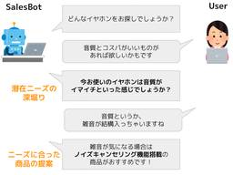
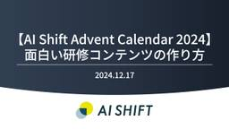

TECH BLOG | 株式会社AI Shift
https://www.ai-shift.co.jp/techblog
AI ShiftのTECH BLOGです。AI技術の情報や活用方法などをご案内いたします。
フィード

【AI Shift Advent Calendar 2024】セールス経験ゼロの人間がセールス対話データセットを作ってみた話
TECH BLOG | 株式会社AI Shift
こんにちは、AIチームの邊土名(@yaelanya_ml)です。 本記事は AI Shift Advent Calendar 2024 の18日目の記事です。 私はサイバーエージェントの研究組織である AI Lab の完 […]投稿 【AI Shift Advent Calendar 2024】セールス経験ゼロの人間がセールス対話データセットを作ってみた話 は 株式会社AI Shift に最初に表示されました。
2日前

【AI Shift Advent Calendar 2024】面白い研修コンテンツの作り方
TECH BLOG | 株式会社AI Shift
こんにちは！AI Shift 生成AIビジネス事業部で研修講師を担当している及川 信太郎(@cyber_oikawa)です。 この記事はAI Shift Advent Calendar 2024の17日目の記事です。 今 […]投稿 【AI Shift Advent Calendar 2024】面白い研修コンテンツの作り方 は 株式会社AI Shift に最初に表示されました。
3日前
【AI Shift Advent Calendar 2024】AIエージェントの設計とその勘所 1
1
TECH BLOG | 株式会社AI Shift
こんにちは AI Shift CTOの青野です AI Shift AdventCalendar 2024 16日目です 今回はAIエージェントを開発する時の勘所について書こうと思います お付き合いお願いします〜 はじめに […]投稿 【AI Shift Advent Calendar 2024】AIエージェントの設計とその勘所 は 株式会社AI Shift に最初に表示されました。
4日前
【AI Shift Advent Calendar 2024】MCP ClientをOpenAIモデルで実装する 1
TECH BLOG | 株式会社AI Shift
こんにちは、AIチームの二宮です。この記事は AI Shift Advent Calendar 2024の14日目の記事です。 はじめに Model Context Protocol (MCP)とは、Anthropicか […]投稿 【AI Shift Advent Calendar 2024】MCP ClientをOpenAIモデルで実装する は 株式会社AI Shift に最初に表示されました。
6日前

【AI Shift Advent Calendar 2024】VAD・VAPを用いた発話終了検知
TECH BLOG | 株式会社AI Shift
こんにちは、AI Shift AIチームの大竹です。本記事は AI Shift Advent Calendar 2024 の11日目の記事です。今回の記事では弊社のAI Messenger Voicebotをはじめとした […]投稿 【AI Shift Advent Calendar 2024】VAD・VAPを用いた発話終了検知 は 株式会社AI Shift に最初に表示されました。
9日前
【AI Shift Advent Calendar 2024】FastAPIのプロファイリング
TECH BLOG | 株式会社AI Shift
こんにちは、AIチームの干飯(@hosimesi11_)です。 この記事はAI Shift Advent Calendar 10日目の記事になります。本記事では、FastAPIを使ったサーバのプロファイリングについて扱い […]投稿 【AI Shift Advent Calendar 2024】FastAPIのプロファイリング は 株式会社AI Shift に最初に表示されました。
10日前
【AI Shift Advent Calendar 2024】OpenAI gpt-4o-audioを用いた音声データからのエンティティ抽出の検証
TECH BLOG | 株式会社AI Shift
こんにちは、AIチームの杉山です。本記事は AI Shift Advent Calendar 2024 の6日目の記事です。今回の記事では音声自動応答サービスにおけるエンティティ抽出の課題をOpenAI gpt-4o-a […]投稿 【AI Shift Advent Calendar 2024】OpenAI gpt-4o-audioを用いた音声データからのエンティティ抽出の検証 は 株式会社AI Shift に最初に表示されました。
14日前
【AI Shift Advent Calendar 2024】生成AIの研修を1年やって感じた、生成AIが企業で普及するまで
TECH BLOG | 株式会社AI Shift
こんにちは！生成AIビジネス事業部で研修開発の責任者を務めている伊藤 優(@yuuito1995)です。AdventCalendarの5日目を担当させていただきます。(今日が誕生日なので、12/5を担当することにしました […]投稿 【AI Shift Advent Calendar 2024】生成AIの研修を1年やって感じた、生成AIが企業で普及するまで は 株式会社AI Shift に最初に表示されました。
15日前
【AI Shift Advent Calendar 2024】MCP(Model Context Protocol)を用いた予約対話AIエージェントの構築と動作のトレース
TECH BLOG | 株式会社AI Shift
(サムネイルはDALLE-3によって生成) こんにちは、AI Shiftの友松です。 この記事はAI Shift Advent Calendar の4日目の記事です。今回はAnthropic社から発表されたMCP(Mod […]投稿 【AI Shift Advent Calendar 2024】MCP(Model Context Protocol)を用いた予約対話AIエージェントの構築と動作のトレース は 株式会社AI Shift に最初に表示されました。
16日前
【AI Shift Advent Calendar 2024】第15回対話システムシンポジウム参加報告
TECH BLOG | 株式会社AI Shift
こんにちは、AI Shiftの東(@naist_usamarer)です。この記事はAI Shift Advent Calendar 2024の2日目の記事になります。 本記事では、2024年11月28日(木)から29日( […]投稿 【AI Shift Advent Calendar 2024】第15回対話システムシンポジウム参加報告 は 株式会社AI Shift に最初に表示されました。
18日前